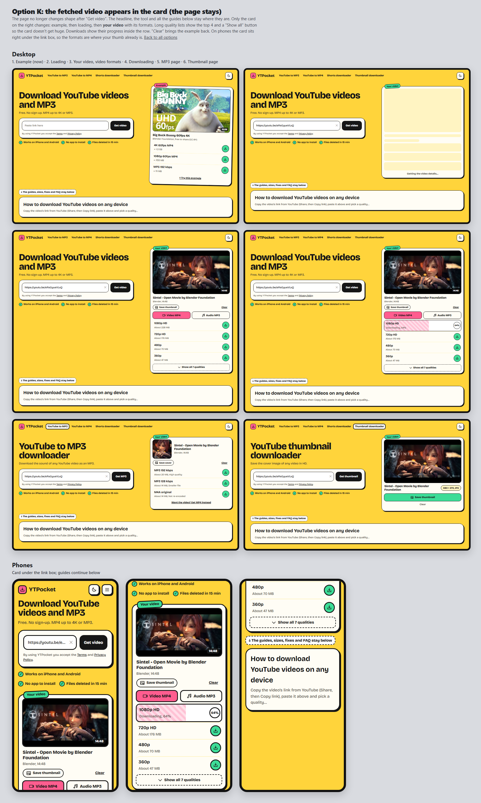
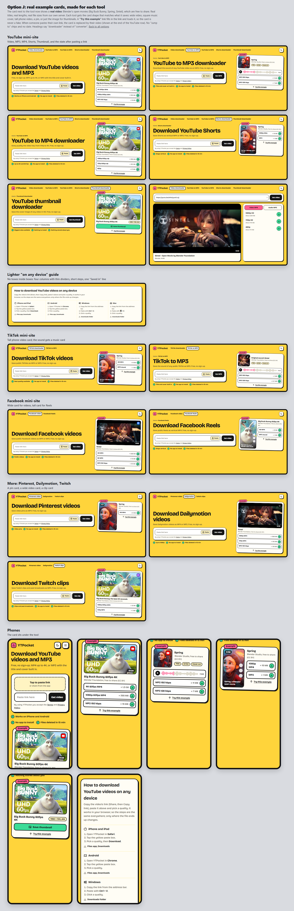
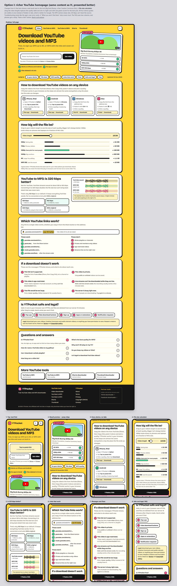
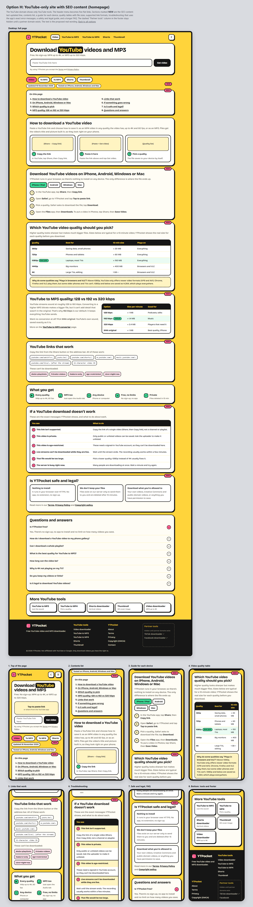

K. The fetched video appears in the card (page stays)
Example, loading, your video with formats (top 4 + Show all), downloading, MP3 page, thumbnail page, phones.

J. Real example cards for every tool
Blender open movies (free to share) with real sizes; a card shape per tool: wide, music, tall, pin, thumbnail. Lighter device guide. Other mini-sites included.

I. YouTube SEO homepage, richer version
Result preview in the hero, file-size calculator, all devices visible, 320 kbps explained with a drawing, error cards, trust strip, sticky paste button on phones.

H. YouTube-only site with SEO content
Homepage of the YouTube domain: flat YouTube menu, contents list, device guide, quality tables, link formats, troubleshooting, safe and legal, longer FAQ.

G. Real icons, step cards and tool cards
Phosphor icons + Simple Icons logos; step pictures built from the real app; new tool cards and FAQ.
F. Site structure: header menus, tool page sections, footer
Example page "YouTube to MP3": desktop with the YouTube menu open, and 4 phone screens.

E. YTPocket: D's layout with C's bold style (your pick)
Big paste area and bottom-sheet formats, in yellow with thick outlines. Includes a desktop layout.

A. Familiar converter (YTDownly)
Looks like tools people already use. Safest, least memorable.

B. Tape deck, simplified (YTSavvy)
Today's design, simplified. Most distinctive; amber meter progress.

C. Bold and playful (TubeSnag)
Yellow, thick outlines, chunky buttons. Fun and loud.

D. Mobile app feel (YTPocket)
Big paste area, formats in a bottom sheet. Feels like an installed app.